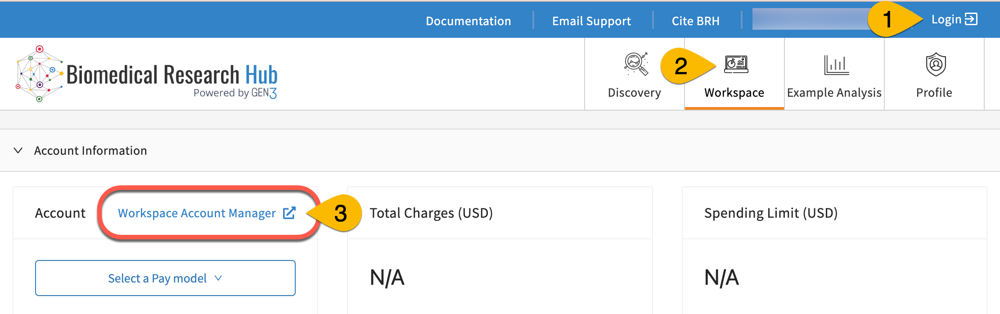
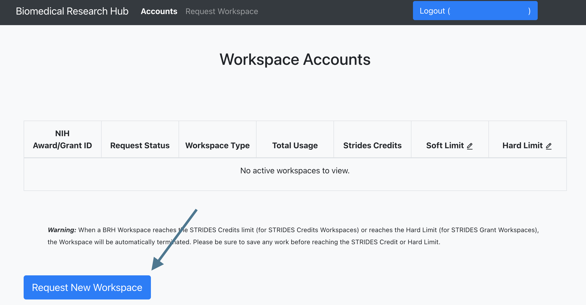
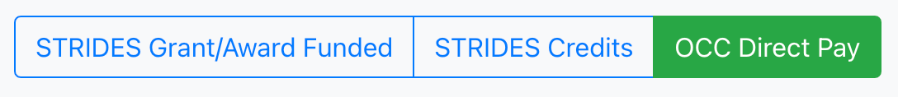
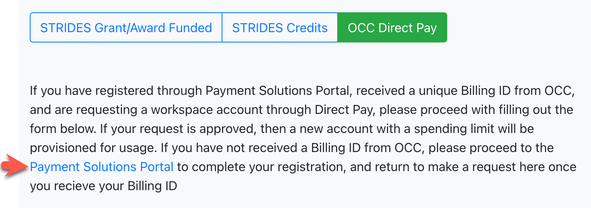
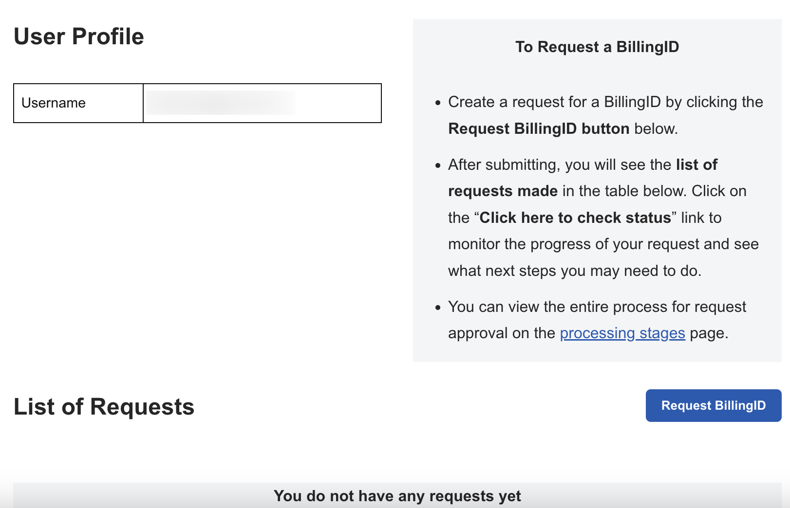
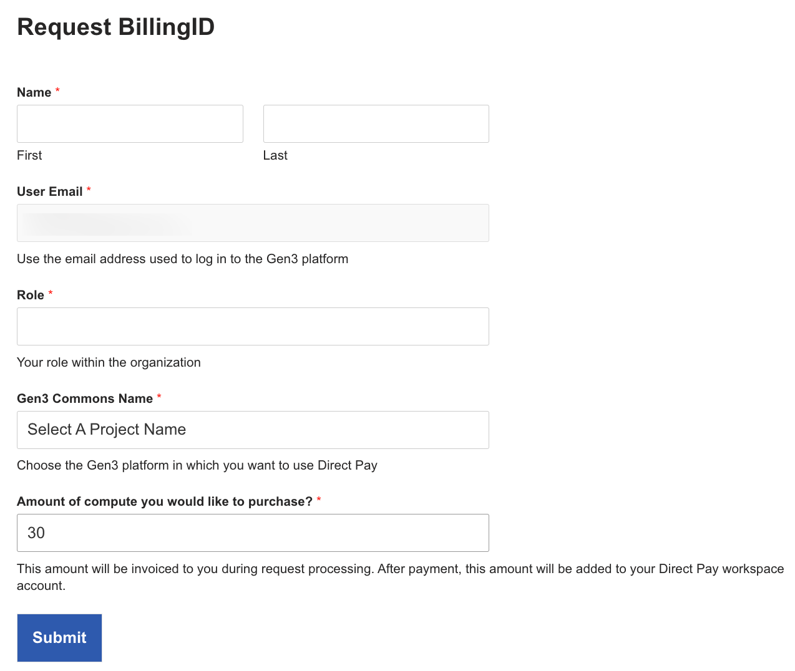
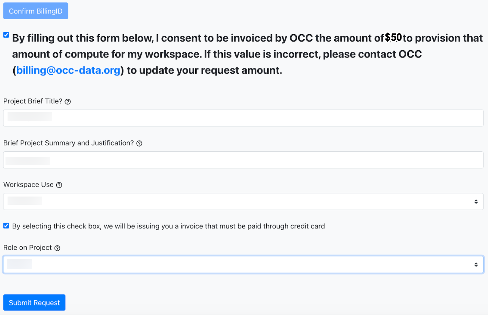
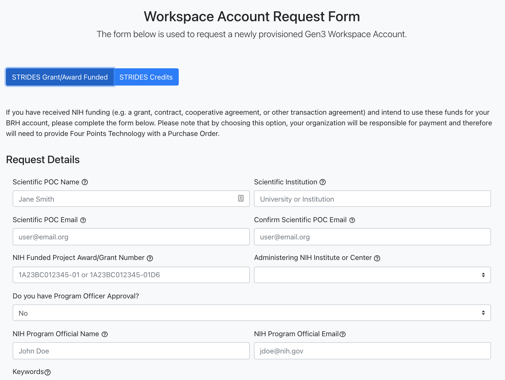
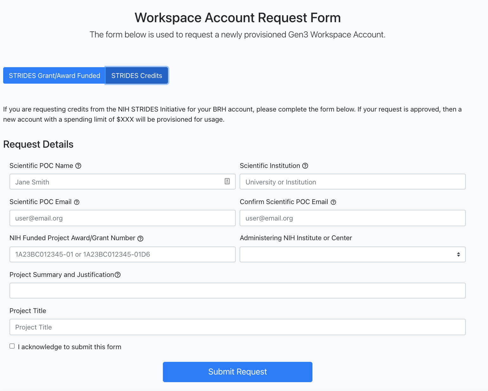

Workspace Accounts - Trial and Persistent Pay Models (STRIDES, Direct Pay)¶
Four Different Pay Models for BRH Workspace Accounts¶
We have 4 different pay models for workspace accounts:
- Trial Access (free for user, limited to 2 months)
- OCC Direct Pay (persistent pay model paid by credit card through OCC Payment Portal)
- STRIDES Grant/Award Funded (persistent pay model paid by organizations with NIH grant funds)
- STRIDES Credits (persistent pay model paid directly by NIH)
Instructions for requesting funding for each pay model are provided below.
Please Note:
- The process for granting access for a workspace account can take 2-4 weeks for NIH STRIDES, and a month for Direct Pay, although it may also be faster.
- The account from each different paymodel will have its own workspace storage directory (
/pd; read about/pdhere); data is not shared between accounts with different funding types. However, you can import and export data among accounts as long as they are active and have funding.
Request Trial Access¶
Trial Access is granted for 2 months when you request access to the BRH Workspace page. The instructions for requesting workspace access are on the Workspace Registration page. Note that your trial access will become inactive as soon as you have a workspace account funded through a persistent paymodel.
Requesting Funding for Workspace Accounts Through Any Persistent Pay Model¶
-
Once they have access to the Workspace page, users can request a workspace account by first logging to BRH (#1), going to the Workspace page (#2), then clicking the Workspace Account Manager link (#3). Click "Log in" and "Yes, I authorize" to open the portal in a new tab.

Some STRIDES users may receive an invitation via email to register for an NIH STRIDES workspace account. These users can also click the link in the invitation email to get to the BRH Workspace Account Manager.
-
In the BRH Workspace Account Manager, users can see their persistent workspace accounts and any available credits or funds in the accounts. If you only have trial access, you will not see any active accounts.
To request a workspace account with a persistent paymodel, click the "Request New Workspace" button.

-
Choose from any of the 3 persistent pay model funding options: a) STRIDES Grant/Award Funded; b) STRIDES Credits; or c) OCC Direct Pay to request a funded workspace account.

OCC Direct Pay Funded Workspace Account¶
The OCC Direct Pay form can be selected if a user wants to pay with a personal or organizational credit card. OCC Direct Pay only requires a valid credit card.
Funding a workspace account with OCC Direct Pay has 2 major parts:
- Request BillingID
- Use BillingID to provision Direct Pay funds for the Workspace Account
Request BillingID¶
Note: It can take up to a month to receive a BillingID if you act promptly to complete each step.
-
Go to https://payments.occ-data.org or click on the Payment Portal link (red arrow below) on the OCC Direct Pay tab for the workspace account request form.

-
Create an account for the OCC Payment Portal: Under Create Account, enter your email address and click “Request Token”. Note: This should be the email address you use to log into BRH; Direct Pay is not currently compatible with ORCID login. If you already logged in with ORCID to request a workspace account, please log out and authenticate with either the InCommon or Google option. Please monitor this address, as relevant alerts will be sent here.
- You will receive an email with a 6-digit token within a couple minutes of your request. It may go to spam, so watch the Spam folder, as well.
- Copy your token from your email. Paste it into the Enter Token field on the OCC Payment Portal. Click Sign In. (Note: You will be asked to enter a token at each log-in.)
-
Successful sign-in will open a Profile page for your account on the OCC Payment Portal. When you first create your account on the payment portal, you will not have any access requests.

-
Click the “request access” button. The form shown below will open. Complete the form and click Submit.

For Role, indicate your role within your organization/institution. If you don't have an institutional affiliation, you can put "independent data analyst"
-
Once the form is submitted, a message will appear indicating successful submission. You will also receive an email (again, check spam).
- If you return to the Profile page in the OCC Payment Portal now, you’ll see there is an active request in the table at the bottom. Click “Check Status” to view progress on the steps toward final approval and provisioning of your request. You can view what happens at each stage of processing here: https://payments.occ-data.org/processing-stages/.
-
When you click Check Status, you can see the progress of your request. At first, you will see that they are processing your request (indicated by an orange color). Once OCC finishes processing your access request, you will receive 2 emails, and the progress tracker at the bottom will show that Submit Access Request is completed (green). Complete E-Doc is now colored orange. The first email indicates that your access request status has progressed, and the second email has a link to an electronic document.
Important: Review the Agreement carefully to understand the terms. PLEASE READ THIS DOCUMENT VERY CAREFULLY BEFORE SIGNING! This document presents the terms governing how your Direct Pay funds will be allocated, among other things. Be sure you understand all the terms before you sign and submit. If you have any questions or concerns about the terms and conditions, please email billing@occ-data.org before you sign.
Once you submit the signed document, it could take up to 5 days to finish processing receipt of the signed document and update your progress tracker. You will receive an email when processing is complete.
But, you will receive an email quickly confirming that the document has been signed and providing a link to download the signed document for your records. If you do not receive that within 5 minutes (be sure to check your spam folder), please return to the document and verify that you fully signed and submitted the document. Please save the document so you can reference it as needed.
-
When your request has been fully approved, the “Received Approval” step will be green, you’ll receive an email, and your BillingID field will have been populated on the Profile page of the OCC Payment Portal.
You may now use your BillingID to provision a Direct Pay workspace account in BRH.
Use BillingID to provision Direct Pay funds for the Workspace Account¶
Note 1: Before you request a workspace account through any persistent pay model (eg, Direct Pay, STRIDES), be sure to backup all data in your /pd for your workspace. Once your persistent pay model is funded, you will no longer have access to the /pd used during trial access. (What’s a /pd?)
Note 2: It can take up to 12 business days to provision funds from a BillingID.
- Copy your BillingID from your User Profile page in the OCC Payment Portal.
- Return to the Workspace Account Manager, and click Request New Workspace to open the Workspace Account Request Form.
- Click the OCC Direct Pay tab.
- Paste your BillingID in the field, and enter the first 3 characters of the email address associated with your BillingID (For example, if your email was john.smith@gmail.com, you would enter “joh”)
- Click Confirm BillingID. Once your BillingID is confirmed, the bottom part of the form will open to allow you to enter the details for provisioning your account.
-
Be sure to check the box that says that you agree to be invoiced. The amount of the invoice is taken from the value you entered when you made your access request on the Payment Portal.
- Enter a title for your project and a brief summary. This is to be used to help you keep track of your requests in case you have multiple accounts for different projects.
- Identify whether your workspace use is personal or organizational.
- Indicate whether you have a credit card you are allowed to use to pay for provisioning the workspace account. If your workspace is personal and you have any credit card, the answer will be yes. If your workspace is organizational - make sure you are not using a departmental card or similar without permission.
- Indicate what role you have as a researcher on this project.

-
Once you submit this form, you will receive an email with the invoice. (It can take up to 5 business days to be sent.) There will be a secure link in the invoice to submit your credit card information and pay the invoice. When you pay the invoice, OCC will apply the funds, create an AWS account for this project’s workspace, and send that information to BRH to provision your account. This can take up to 7 business days after you have signed the form. You will receive an email when your account is set up and ready to be used in your workspace.
When you submit this form, you will also see a new entry in the OCC Direct Pay Accounts table in the Workspace Account Manager. The request status for your request will be Pending until the invoice is paid and the account is finalized.
-
Once your Direct Pay request is funded, your workspace will be shown as Active on the Request Status column in the Workspace Account Manager.
STRIDES Grant/Award Funded Workspace Account¶
The STRIDES Grant/Award Funded form can be selected if researchers have received NIH funding (e.g. a grant, contract, cooperative agreement, or other transaction agreement) and intend to use these funds for the BRH workspace account. With this option, the researchers' organization will be responsible for payment.

Submit the request form. Note that the process of granting access for a workspace account can take 2-4 weeks and users will be notified by email. Following approval, users will see the provisioned workspace account in the BRH Workspace Accounts Manager.
STRIDES Credits Funded Workspace Account¶
Select the STRIDES Credits form to request credits from the NIH STRIDES Initiative for the BRH Workspace account. With this option, once the request is approved, a new account with a set spending limit of will be provisioned by NIH directly for usage.

Submit the request form. Note that the process of granting access for a workspace account can take 2-4 weeks and users will be notified by email. Following approval, users will see the provisioned workspace account in the BRH Workspace Accounts Manager.
What is the NIH STRIDES Initiative?¶
The NIH STRIDES initiative (NIH Science and Technology Research Infrastructure for Discovery, Experimentation, and Sustainability) can provide funding for BRH Workspace Accounts. The NIH STRIDES Initiative enables researchers with NIH grants to cost-effectively leverage the use of cloud environments by partnering with commercial providers, such as Amazon Web Services.
By leveraging the STRIDES Initiative, NIH and NIH-funded institutions can begin to create a robust, interconnected ecosystem that breaks down silos related to generating, analyzing, and sharing research data.
NIH-funded researchers with an active NIH award may take advantage of the STRIDES Initiative for their NIH-funded research projects. Eligible researchers include NIH intramural researchers and awardees of NIH contracts, other transaction agreements, grants, cooperative agreements, and other agreements. More information on NIH STRIDES options and how to gain access can be found here.